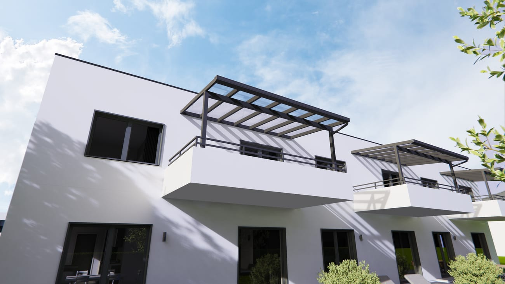

Eine der häufigsten Fragen vor dem Bau lautet: Brauche ich eine Baugenehmigung? Die kurze Antwort: Es kommt darauf an – vor allem auf die Größe und Ihr Bundesland. Dieser Ratgeber gibt Ihnen eine erste Orientierung.
Es hängt vom Bundesland ab
In Deutschland regelt jedes Bundesland das Baurecht über seine eigene Landesbauordnung. Deshalb gibt es keine bundesweit einheitliche Grenze. Viele Bundesländer erlauben aber Terrassenüberdachungen bis zu einer bestimmten Größe „verfahrensfrei“ – das heißt, ohne Bauantrag.
- Häufig genannte Grenze: rund 30 m² überdachte Fläche
- Teils zusätzliche Vorgaben zur Tiefe (z. B. 3 m oder 4,5 m)
- Einige Länder (z. B. Rheinland-Pfalz, Thüringen) sind großzügiger
Verfahrensfrei ist nicht „egal“
Auch wenn kein Bauantrag nötig ist, müssen Sie die geltenden Vorschriften einhalten – etwa Abstandsflächen zum Nachbargrundstück, Vorgaben aus dem Bebauungsplan oder örtliche Gestaltungssatzungen. „Verfahrensfrei“ bedeutet also nicht „regelfrei“.
Tipp: Nutzen Sie unseren kostenlosen Baugenehmigung-Check auf der Startseite für eine schnelle erste Einschätzung nach Bundesland.
Wann wird es genehmigungspflichtig?
Größere Anlagen, Überdachungen im Außenbereich oder besondere Grundstückssituationen können einen Bauantrag erforderlich machen. Auch bei Carports gelten je nach Land eigene Grenzen. Im Zweifel gibt Ihr örtliches Bauamt verbindliche Auskunft.
Wir unterstützen Sie
Sie müssen sich damit nicht allein herumschlagen: Wir kennen die Anforderungen in der Region und helfen Ihnen, Ihr Projekt richtig einzuordnen – und unterstützen bei Bedarf beim Antrag. Sprechen Sie uns einfach an.
Hinweis: Dieser Artikel ersetzt keine Rechtsberatung. Maßgeblich ist die jeweilige Landesbauordnung und die Auskunft Ihres Bauamts.